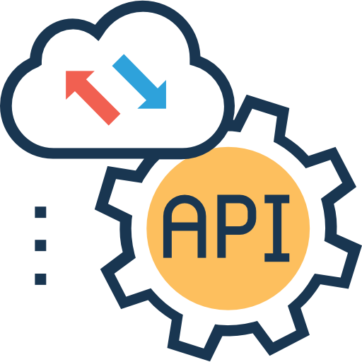
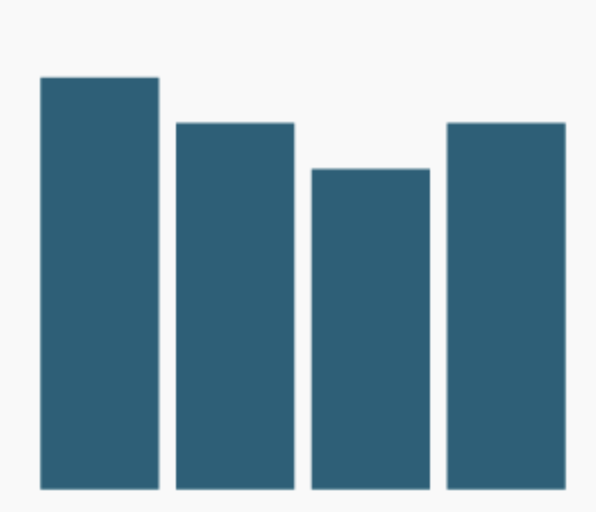

Periodismo de datos
Máster Periodismo 360º
RTVE Instituto - Universidad de Sevilla
¿Qué vamos a necesitar?
| Una cuenta de Gmail | Una cuenta de Datawrapper | Una cuenta de Flourish |
Mapa del cólera de J. Snow
La investigación del epidemiólogo John Snow de los casos de cólera durante el brote de 1854 en Londres es uno de los ejemplos más famosos de razonamiento inductivo.

Mapa del cólera de J. Snow
Al colocar sobre un mapa las muertes en el vecindario del brote, Snow detectó una concentración más alta alrededor del surtidor de agua de Broad Street.

- Su conclusión fue que el agua contaminada era la causa de la epidemia y no la transmisión por el aire, como se creía hasta entonces.
Diagrama de F. Nightingale
| ▇ Muertes evitables | ▇ Muertes por herida | ▇ Otras causas |

En 1855, la enfermera británica Florence Nightingale demostró la magnitud del desastre en la sanidad del ejército durante la Guerra de Crimea colocando las muertes por cada 1.000 soldados en un gráfico.
Escuelas de Manchester


 (https://www.rtve.es/noticias/20240314/precios-subieron-febrero-28-segun-confirma-ine/16014631.shtml)
(https://www.rtve.es/noticias/20240314/precios-subieron-febrero-28-segun-confirma-ine/16014631.shtml)

Observatorio electoral, El Confidencial

¿Con quién compartimos la vida a lo largo de los años?, El Diario

El riesgo de incendio se ha duplicado en los últimos 50 años, Civio

The Climate Impact of Your Neighborhood, Mapped, The New York Times

How the NBA scoring record evolved from Wilt to Kareem to LeBron, The Washington Post

The floor is lava, Reuters Graphics
Obtener los datos
Limpieza
Análisis
Enfoque
Verificación
Comunicación

Obtener los datos
Limpieza
Análisis
Enfoque
Verificación
Comunicación
¿Dónde hay datos? 
Obtener los datos
Limpieza
Análisis
Enfoque
Verificación
Comunicación
¿De dónde los sacamos?



Obtener los datos
Limpieza
Análisis
Enfoque
Verificación
Comunicación
El formato importa

Obtener los datos
Limpieza
Análisis
Enfoque
Verificación
Comunicación
 |
 |
 |
Obtener los datos
Limpieza
Análisis
Enfoque
Verificación
Comunicación

Obtener los datos
Limpieza
Análisis
Enfoque
Verificación
Comunicación

Obtener los datos
Limpieza
Análisis
Enfoque
Verificación
Comunicación

Obtener los datos
Limpieza
Análisis
Enfoque
Verificación
Comunicación
Buscar la mejor forma de contar lo que queremos 
Ejemplos


Rusia emprendió el asalto a la capital de ucrania con brutalidad: hubo más de cien sirenas solo en la segunda quincena de marzo.

Fracasada la toma de Kiev, y tras un verano de con menos ataques, el 8 de octubre, la destrucción del puente que unía Crimea y Rusia provocó una nueva ofensiva del Kremlin.

El 25 de enero, solo en Kiev sonaron cinco alarmas que advertían del impacto de los 30 misiles lanzados por Rusia en respuesta al compromiso de EE.UU. y Alemania de enviar tanques a Ucrania.


Battling Infectious Diseases in the 20th Century: The Impact of Vaccines, Wall Street Journal
¿Qué historia quieres contar?
 |
 |
|
Gráfico de línea Si solo tienes una variable |
Gráfico de áreas Si tienes más de una variable y forman parte de un todo |
Gráfico de líneas múltiple Si tienes múltiples variables que no forman un todo pero comparten una unidad de medida |
|  |  |
 |
Gráfico de columnas Magnitud en el tiempo |
Columnas apiladas stacked / treemap Un todo y sus partes |
Mapas de coropletas Considerando la geografía |
 |
 |
Diagrama de dispersión Mostrar relación entre dos variables |
Histograma Para mostrar la distribución de una sola variable o de varias |
 |
|
Diagrama de Sankey Muestra los flujos de un sistema |
Diagrama de cuerdas Muestra relaciones ponderadas y flujos entre nodos |
Pictogramas
Los pictogramas ofrecen un vistazo rápido de cantidades y volúmenes, pero no sirven para mostrar datos masivos
Las barras son más eficientes para comparar cantidades discretas
Los iconos deben ser simples, simétricos y funcionar bien en tamaños pequeños
Mala elección
Buena elección

Pictogramas
No deformes los pictogramas para transformarlos en barras/columnas. El tamaño debe ser proporcional en cuanto al área.

Pictogramas
Utiliza unidades naturales.
Asigna un valor al icono y divide los datos en unidades que sean múltiplo de ese valor.
Evita partir los iconos. Si tus datos no encajan con esta división, las barras o las columnas son mejor opción.

Mapas
Tres tipos de mapas

Mapas coropléticos

Mapas de símbolos

Mapa de ubicación


Xaquín Veira González
El color en la visualización de datos
- Sé consistente con el uso del color en todos tus gráficos.

El color en la visualización de datos
- Pon el foco en lo importante. A veces, el gris nos puede ayudar a ofrecer contexto sin abrumar.

El color en la visualización de datos
- Usa el color de manera intuitiva y ten en cuenta su significado cultural para la audiencia.

El color en la visualización de datos
- No uses gradientes de color para variables categóricas, y viceversa.

El color en la visualización de datos
- Puedes usar gradientes para distinguir subgrupos dentro de categorías.

Población en territorios ocupados por religión (The Economist)
Herramientas para crear paletas de color
- Coolors


Datos espaciales y geométricos
Tres tipos de vectores
Puntos Tienen ubicación pero no extensión (oficinas de correos).
Líneas  Representan una geometría lineal a partir de puntos conectados (fronteras).
Representan una geometría lineal a partir de puntos conectados (fronteras).
Polígonos Áreas completamente encerradas por líneas cuyos puntos inicial y final coinciden (países, provincias…).
Datos espaciales y geométricos
Fuentes de datos cartográficos:
⛏️ Google (Universidades, organismos internacionales, investigadores…)
El formato importa 
QGIS y Mapshaper


Información de referencia
- Añade detalles al mapa que ayuden a los usuarios a interpretarlo.
- Etiqueta ciudades importantes, calles, mares o ríos que aporten contexto a la historia.

Kenneth Field
¡Gracias!